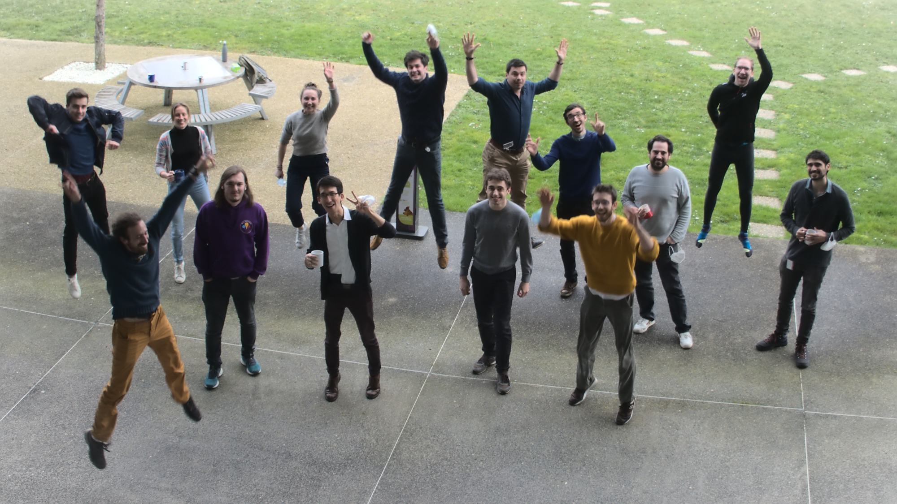
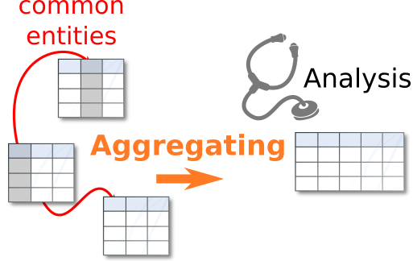
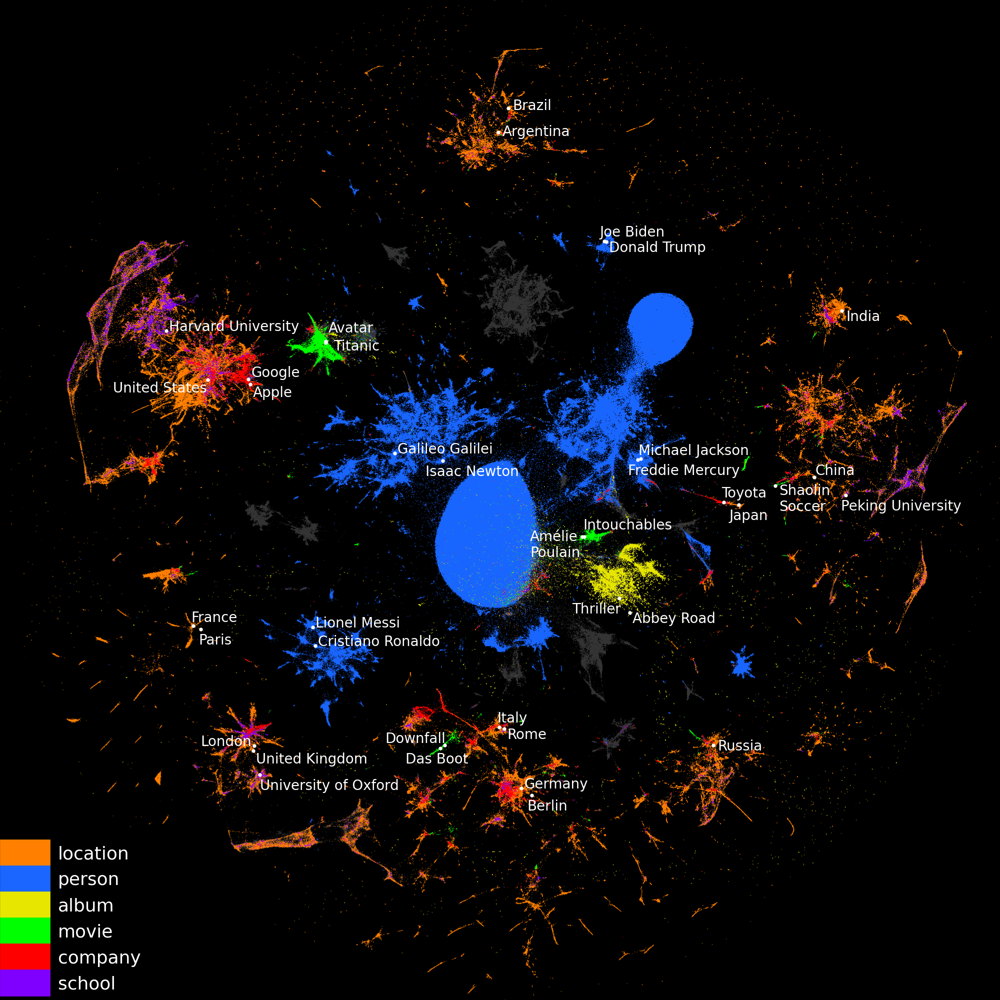
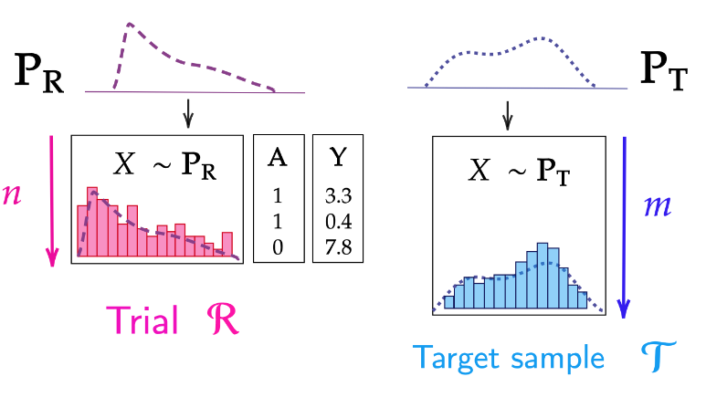

A retrospective on last year (2022): I embarked on a new scientific adventure, assembling a team focused on developing machine learning for health and social science. The team has existed for almost a year, and the vision is nice shaping up. Let me share with you illustrations of where we are at. This is extracted from our yearly report which will be public later, but I have sometimes edited it a bit to add personal context.
Highlights
- A new team: Soda
- The scientific vision
- Some notable results of 2022
- Learning on relational data: aggregating across many tables
- Validating probabilistic classifiers: beyond calibration
- Reweighting randomized trials for generalization: finite sample error and variable selection
- Challenges to clinical impact of AI in medical imaging
- Privacy-preserving synthetic educational data generation
A new team: Soda

The team in early 2022 (it has grown a lot since)
At Inria, we have teams assembling multiple tenured researchers around a scientific project. Last year, we assembled a new team called Soda, which stands for “social data”, but above all is a fun name.
In a year, the team grew like crazy (to be honest, this had been baking for a little while). We are now around 25 people. There are 4 PIs (Marine le Morvan, Judith Abécassis, Jill-Jênn Vie, and myself); and the engineers working on scikit-learn at Inria are also part of the team.
The scientific vision
Machine learning to leverage richer, more complex, data for social-sciences and health
Application context: richer data in health and social sciences
Opportunistic data accumulations, often observational, bare great promises for social and health sciences. But the data are too big and complex for standard statistical methodologies in these sciences.
Health databases Increasingly rich health data is accumulated during routine clinical practice as well as for research. Its large coverage brings new promises for public health and personalized medicine, but it does not fit easily in standard biostatistical practice because it is not acquired and formatted for a specific medical question.
Social, educational, and behavioral sciences Better data sheds new light on human behavior and psychology, for instance with on-line learning platforms. Machine learning can be used both as a model for human intelligence and as a tool to leverage these data, for instance improving education.
Applications raise specific data-science challenges
Data management: preparing dirty data for analytics Assembling, curating, and transforming data for data analysis is very labor intensive. These data-preparation steps are often considered the number one bottleneck to data-science. They mostly rely on data-management techniques. A typical problem is to establishing correspondences between entries that denote the same entities but appear in different forms (entity linking, including deduplication and record linkage). Another time-consuming process is to join and aggregate data across multiple tables with repetitions at different levels (as with panel data in econometrics and epidemiology) to form a unique set of “features” to describe each individual.
Progress in machine learning increasingly helps automating data preparation and processing data with less curation.
Data science with statistical machine learning Machine learning can be a tool to answer complex domain questions by providing non-parametric estimators. Yet, it still requires much work, eg to go beyond point estimators, to derive non-parametric procedures that account for a variety of bias (censoring, sampling biases, non-causal associations), or to provide theoretical and practical tools to assess validity of estimates and conclusion in weakly-parametric settings.
Our research axes
Representation learning for relational data
I dream of deep-learning methodology for relational databases, from tabular datasets to full relational databases. The stakes are i) to build machine-learning models that apply readily to the raw data so as to minimize manual cleaning, data formatting and integration, and ii) to extract reusable representations that reduce sample complexity on new databases by transforming the data in well-distributed vectors.
Mathematical aspects of statistical learning for data science
I want to use machine learning models as non-parametric estimators, as I worry about the impact of mismodeling on conclusion. However, for a given statistical task, the statistical procedures and validity criterion need to be reinvented. Soda contributes statistical tools and results for a variety of problems important to data science in health and social science (epidemiology, econometrics, education). These fields lead to various statistical topics:
- Missing values
- Causal inference
- Model validation
- Uncertainty quantification
Machine learning for health and social sciences
Soda targets applications in health and social sciences, as these can markedly benefit from advanced processing of richer datasets, can have a large societal impact, but fall out of mainstream machine-learning research, which focus on processing natural images, language, and voice. Rather, data surveying humans needs another focus: it is most of the time tabular, sparse, with a time dimension, and missing values. In term of application fields, we focus on the social sciences that rely on quantitative predictions or analysis across individuals, such as policy evaluation. Indeed, the same formal problems, addressed in the two research axes above, arise across various social sciences: epidemiology, education research, and economics. The challenge is to develop efficient and trustworthy machine learning methodology for these high-stakes applications.
High-quality data-science software
Societal and economical impact of machine learning requires easy-to-use practical tools that can be leveraged in non-specialized organizations such as hospitals or policy-making institutions.
Soda incorporates the core team working at Inria on scikit-learn, one of the most popular machine-learning tool world-wide. One of the missions of soda is to improve scikit-learn and its documentation, transfering the understanding of machine learning and data science accumulated by the various research efforts.
Soda works on other important software tools to foster growth and health of the Python data ecosystem in which scikit-learn is embedded.
Some notable results of 2022
I am listing here a small number of the achievements of the team, because I find them inspiring.
Learning on relational data: aggregating across many tables
For many machine-learning tasks, augmenting the data table at hand with features built from external sources is key to improving performance. For instance, estimating housing prices benefits from background information on the location, such as the population density or the average income.

Often, data must be assembled across multiple tables into a single table for analysis. Challenges arise due to one-to-many relations, irregularity of the information, and the number of tables that may be involved.
Most often, a major bottleneck is to assemble this information across many tables, requiring time and expertise from the data scientist. We propose vectorial representations of entities (e.g. cities) that capture the corresponding information and thus can replace human-crafted features. In Cvetkov-Iliev 2023, we represent the relational data on the entities as a graph and adapt graph-embedding methods to create feature vectors for each entity. We show that two technical ingredients are crucial: modeling well the different relationships between entities, and capturing numerical attributes. We adapt knowledge graph embedding methods that were primarily designed for graph completion. Yet, they model only discrete entities, while creating good feature vectors from relational data also requires capturing numerical attributes. For this, we introduce KEN: Knowledge Embedding with Numbers. We thoroughly evaluate approaches to enrich features with background information on 7 prediction tasks. We show that a good embedding model coupled with KEN can perform better than manually handcrafted features, while requiring much less human effort. It is also competitive with combinatorial feature engineering methods, but much more scalable. Our approach can be applied to huge databases, for instance on general knowledge graphs as in YAGO, creating general-purpose feature vectors reusable in various downstream tasks.

Entity embeddings of YAGO (wikipedia) (2D-representation using UMAP). The vectors are downloadable from https://soda-inria.github.io/ken_embeddings} to readily augment data-science projects.
Validating probabilistic classifiers: beyond calibration
Validating probabilistic predictions of classifiers must go account not only for the average error given an predicted score, but also for the dispersion of errors.
Ensuring that a classifier gives reliable confidence scores is essential for informed decision-making, in particular in high-stakes areas such as health. For instance, before using a clinical prognostic model, we want to establish that for a given individual is attributes probabilities of different clinical outcomes that can be indeed trusted. To this end, recent work has focused on miscalibration, i.e., the over or under confidence of model scores.
Yet calibration is not enough: even a perfectly calibrated classifier with the best possible accuracy can have confidence scores that are far from the true posterior probabilities, if it is over-confident for some samples and under-confident for others. This is captured by the grouping loss, created by samples with the same confidence scores but different true posterior probabilities. Proper scoring rule theory shows that given the calibration loss, the missing piece to characterize individual errors is the grouping loss. While there are many estimators of the calibration loss, none exists for the grouping loss in standard settings. In Perez-Level 2023, we propose an estimator to approximate the grouping loss. We show that modern neural network architectures in vision and NLP exhibit grouping loss, notably in distribution shifts settings, which highlights the importance of pre-production validation.
Reweighting randomized trials for generalization: finite sample error and variable selection

There may be a sampling bias between a randomized trial and the target population.
Randomized Controlled Trials (RCTs) are ideal experiments to establish causal statement. However, they may suffer from limited scope, in particular, because they may have been run on non-representative samples: some RCTs over- or under- sample individuals with certain characteristics compared to the target population, for which one wants conclusions on treatment effectiveness. Re-weighting trial individuals to match the target population can improve the treatment effect estimation.
In Colnet 2022, we establish the exact expressions of the bias and variance of such reweighting procedures - also called Inverse Propensity of Sampling Weighting (IPSW) - in presence of categorical covariates for any sample size. Such results allow us to compare the theoretical performance of different versions of IPSW estimates. Besides, our results show how the performance (bias, variance, and quadratic risk) of IPSW estimates depends on the two sample sizes (RCT and target population). A by-product of our work is the proof of consistency of IPSW estimates. Results also reveal that IPSW performances are improved when the trial probability to be treated is estimated (rather than using its oracle counterpart). In addition, we study choice of variables: how including covariates that are not necessary for identifiability of the causal effect may impact the asymptotic variance. Including covariates that are shifted between the two samples but not treatment effect modifiers increases the variance while non-shifted but treatment effect modifiers do not.
Challenges to clinical impact of AI in medical imaging
I have worked for many years on research in computer analysis of medical images. In particular, I am convinced that machine learning bears many promises to improve patients’ health. However, I cannot be blind to the fact that a number of systematic challenges are slowing down the progress of the field.
In Varoquaux & Cheplygina, we tried to take a step back on these challenges, from limitations of the data, such as biases, to research incentives, such as optimizing for publication. We reviewed roadblocks to developing and assessing methods. Building our analysis on evidence from the literature and data challenges, we showed that at every step, potential biases can creep.
- First, larger datasets do not bring increased prediction accuracy and may suffer from biases.
- Second, evaluations often miss the target, with evaluation error larger than algorithmic improvements, improper evaluation procedures and leakage, metrics that do not reflect the application, incorrectly chosen baselines, and improper statistics.
- Finally, we show how publishing too often leads to distorted incentives.
On a positive note, we also discuss on-going efforts to counteract these problems and provide recommendations on how to further address these problems in the future.
This was a fun exercise. I realize that I still need to sit on it and introspect how it has shaped my research agenda, because I think it has pushed me to choose specific emphases (such as model evaluation, or focusing on rich data sources).
Privacy-preserving synthetic educational data generation
Soda also works on other applications than health, for instance education. In this direction, I would like to highlight work in which I did not participate, by Jill-Jenn Vie, another PI of the team.
Institutions collect massive learning traces but they may not disclose it for privacy issues. Synthetic data generation opens new opportunities for research in education. Vie 2022 presented a generative model for educational data that can preserve the privacy of participants, and an evaluation framework for comparing synthetic data generators. We show how naive pseudonymization can lead to re-identification threats and suggest techniques to guarantee privacy. We evaluate our method on existing massive educational open datasets.
The tension between privacy of individuals and the need for datasets for open science is a real and important one.
This was just a quick glance of what we do at soda, and we are just warming up. I am super excited about this research. I hope that it will matter.
I truely believe that more and better machine learning can help health and social science to draw new insight from new datasets.